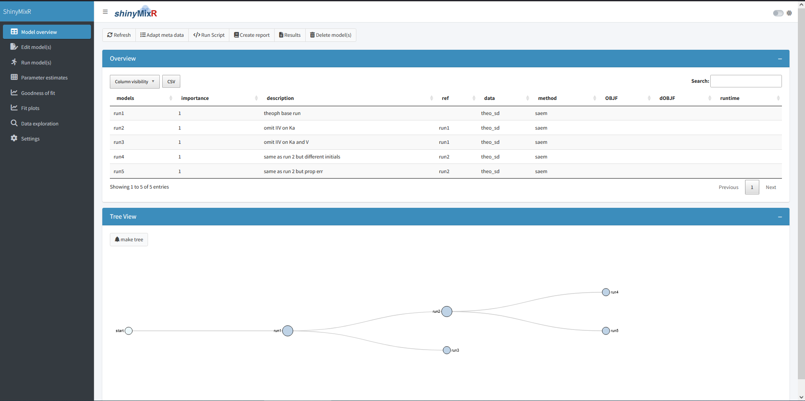
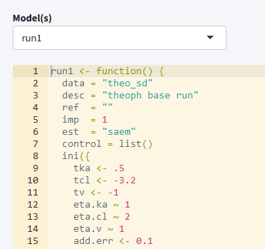
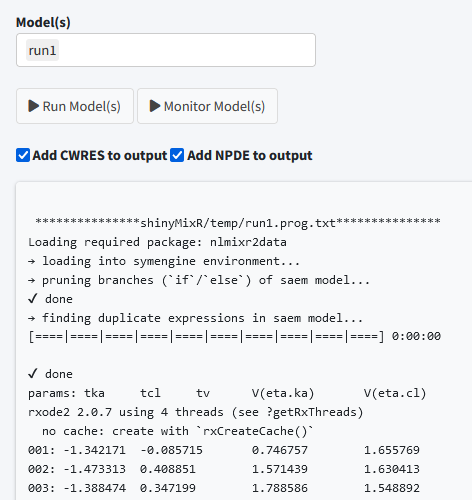
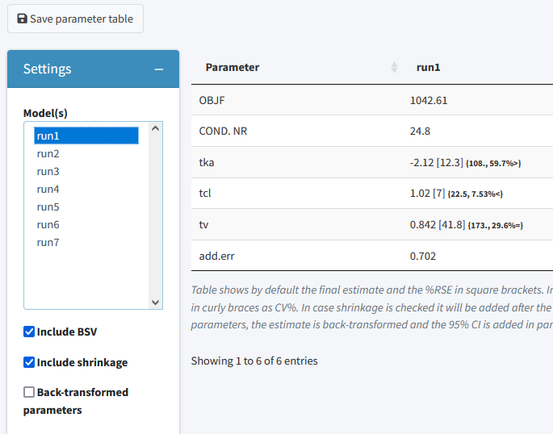
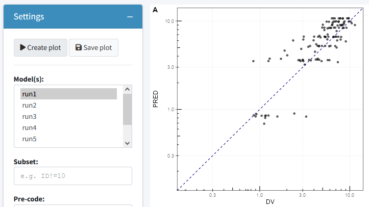
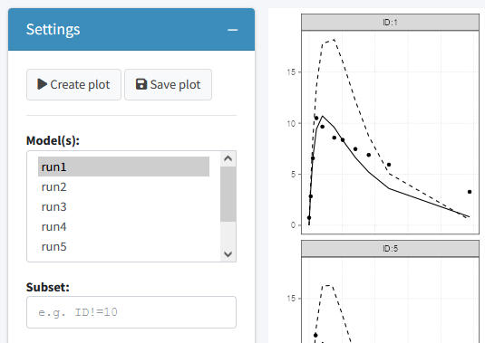
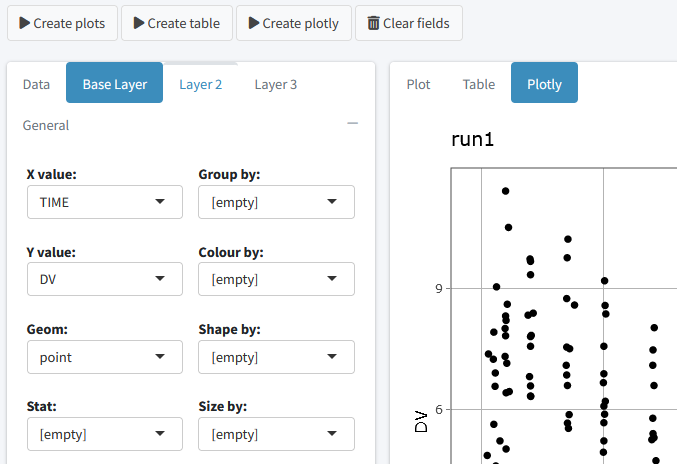
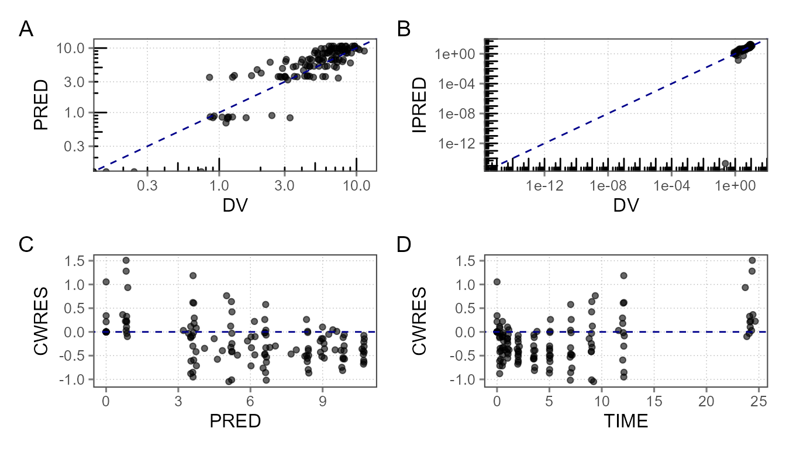
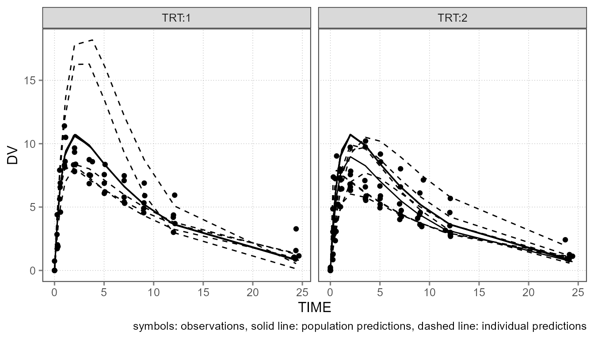

Introduction to the shinyMixR package
getting_started.RmdIntroduction
The shinyMixR package is developed as a graphical user
interface around the nlmixr and nlmixr2
package. It is build with the shiny package combined with
bs4Dash. Many of the functions within the package can also
be used outside the interface within an interactive R session. This
vignette will give a brief introduction on how the package can be used
and what the most important functions are. When working with this
package, there are two important assumptions:
- A specific folder structure should be in place. This structure is
used by the package to read and write certain files (the folder
structure can be generated automatically using the
create_projfunction) - Within a folder structure, multiple models can be present and is considered a “project”. The package creates and manages a project object which is available in the global environment
Getting started
To get started, first all relevant packages need to be installed, e.g.:
# For development versions
devtools::install_github("richardhooijmaijers/shinyMixR")
# Or for CRAN release
install.packages("shinyMixR")
# It is advised to use the CRAN releas of nlmixr2
install.packages("nlmixr2")
# It is advised to use xpose.nlmixr2 for easy diagnostics
install.packages("xpose.nlmixr2")The easiest way to get to know the package is to start by creating the necessary folder structure:
library(shinyMixR,quietly = TRUE)
create_proj()By default, a folder structure is created within the current
directory, which will include some example models. It is however also
possible to create a project in any other folder
(e.g. create_proj(loc='/anypath')). The following folders
are created:
- analysis: in this folder all plots and tables are saved in a structured way to make them accessible to the interface
- data: data files used by the models in R data format (.rds)
- models: models, available as separate R scripts according the
unified user interface in
nlmixr - scripts: generic analysis scripts made available in the interface
- shinyMixR: folder used by the interface to store temporary files and results files
The interface monitors what happens in these folders. This is important to know because new models and/or data can be copied into these folders or files can be removed. This will then be recognized within the app (after refreshing the overview). This way it is possible to work on data and models separately and plug it in to shinyMixR at a later stage.
Once there is a folder structure present the interface can be started:
run_shinymixr(launch.browser = TRUE)The interface will be started and a project object will be created in the global environment in which all information is kept/managed. If correct, the interface will open in the default browser and the following will be seen:

On the left side, there is sidebar with various menu items. The content of the main body will open with the model overview but changes based on the selected menu item in the sidebar. The sidebar can be collapsed by clicking the three lines in the top bar, providing more room for the main body.
Overview
The overview page can be used to see which models are present in a
project. This overview can be exported to a CSV file and a selection of
columns can be made that should be displayed (all using the
DT package). Also a tree overview of the models can be
created here, to show how the various models within your project relate
to one another. Within this view there are several main actions one can
perform which are discussed in the the following subsections.
Refresh
The interface will work with the folder structure which holds all project information. In case new models are added manually or result files are created after a model run, the interface needs to be refreshed to show the latest information. This can be done by clicking the refresh button available in the overview.
Adapt meta data
Each model file within your project can hold meta data. This meta data consist of:
- data; this is the name of the data set used for the model without extension. Data will be read in from the data folder and can either be a saved R data frame (rds) or a comma separate file (csv)
- desc; a free description for the model for easy tracking in your project
- ref; a reference to a model from which the current model emerge. This is used for the tree view and a general overview of how models relate to each other
- imp; this is an importance number. An arbitrary number can be provided which is mainly convenient for filtering within the overview
- est; the estimation method used for the model. This can be any
method supported by the
nlmixr2package (seenlmixr2est::nlmixr2AllEst()for supported methods). - control; a list with all the control options for the selected
estimation method. The possible options may differ per estimation method
(see for instance
saemControlorfoceiControl) - subs; this can be any valid string that can be processed by the
subsetfunction in R. This is used to create a subset of the data passed to the model (e.g. comparable with IGNORE statements in NONMEM)
Using the “Adapt meta data” button within the overview, you can easily create or change the meta data for a model. This meta data will be adapted in the model file itself an can be seen when the model is opened in the editor.
Run script
It is possible to write your own scripts that can be used to analyse model results. This script can be used to process the result for one or multiple models at once (the interface will include the name of the selected models in the script). Some example scripts are included in the package and available in the scripts folder when a project is created. It is possible to create your own script by taking one of the example scripts as an example.
Create report
It is possible to view and combine the results from the models within a project using the “Create report” button. When results are created using one of the scripts mentioned above, results will be present in a default location. The “Create report” functionality can combine the results in an overall document for easy sharing or discussions.
Edit models

The edit tab can be used to edit existing models within an editor
including syntax coloring (using the shinyAce package). It
is also possible to create new models using various templates or to
duplicate existing models. Finally the initial estimates for a model can
be updated using the final estimates of (another) model.
Run models

The run tab can be used to run models within a project. It is possible to run one or multiple models at once. Also it is possible to assess the intermediate output or progress for an nlmixr2 run. Furthermore, you can see which models are still running on the background and kill any model submitted from the interface.
Parameter estimates

The parameter estimates tab can be used to generate a table with parameter estimates. In case multiple models are selected the table will show the results of each run in a separate column. This page is reactive which means that in case a different model is selected, the table is directly updated. There are possibilities to save the table to a latex/pdf or html file, show back-transformed values or to include shrinkage and between subject variability within the output
Goodness of fit

The goodness of fit tab can be used to generate a the most relevant
goodness of fit plots. Plots can be generate using the
nlmixr.xpose2 package or directly using ggplot
(this can be specified in the settings widget). Also here the plots can
be saved to a latex/pdf or html file. Additional options are present to
pre-process your data, select the type of plot and color observations by
a variable in your data.
Fit plots

The fit plots tab can be used to generate a individual fit plots. In general similar options are present here as for the goodness of fit plots. Additionally the variables for plotting can be selected to enable different types of plots.
Data exploration

The data exploration tab can be used to generate exploratory plots for input or results data. Different types of plots are possible including point, line, boxplot, barplot, histograms and more. Different layers can be added to the plot and simple summary stats can be included. Finally the data can be presented as plot, interactive plotly or table.
Interactive session
When working in an interactive R session, many functions used by the interface are also available from an interactive R session. When working outside the interface it is important to know how to interact with the project object. This object should be created as one of the first steps because other function rely on the availability of this object:
proj_obj <- get_proj()This function will look in the folder structure to create or update the available information. The result is a list that is build-up as follows:
object
|--- run 1
| |--- model location
| |--- model meta data
| |--- model high level results
|
|--- ...
|
|--- meta data (time of last refresh)In case this object is not present it will be created by looking at the files present in the current folder structure. In case the object is already present it will check if newer files are present in the current folder and will update the object with this information. Therefore one have to be aware that this function should be submitted manually in case new information is present in the one of the folders.
Once a folder structure is in place and the project object is created, an overview can be created for the available models and, if models are submitted, high level results. It is also possible to display a collapsible d3 tree view of the models. This is mainly useful in case reference to models is provided to show the hierarchy of the models within a project:
Although the nlmixr2 package obviously has the
possibility to run nlmixr models, the shinyMixR package also have a
function available named run_nmx. the main reason this
function was written is the option to run the model in an external R
session. This is necessary within the interface to overcome the
application from freezing when a model is submitted. Also within an
interactive R session it is convenient because you do not have to wait
for a run to finish. An example how this can be used is given below:
run_nmx("run1")
# progress of a run is written to external text file
# this can be read-in for intermediate assessment
readLines("shinyMixR/temp/run1.prog.txt")The current version of the package has three functions for assessing
the model results. The first function is to create a simple parameter
table par_table. By default this function returns a
data.frame. In case multiple models are selected, each column will have
the results of the selected model. The results can also be written to a
PDF (using latex) or html file using the R3port
package:
# Default data frame
par_table(proj_obj,c("run1","run2"))
# output to tex file (compiled to pdf)
par_table(proj_obj, models="run1", outnm="par.tex")For assessing the goodness of fit, the gof_plot function
can be used. This function will by default use the
nlmixr.xpose2 package to create 4 different types of plots.
It is also possible to directly create ggplot2 types of plots. By
default the plots will be created within the R session but can also be
written to pdf/html using the R3port package:
res <- readRDS("./shinyMixR/run1.res.rds")
gof_plot(res, type="user")
# gof_plot(res, mdlnm="run1", outnm="gof.tex")The last plot is an individual fit plot fit_plot. This
function will also by default use the nlmixr.xpose2 package
to create a plot per individual including the observed data, individual
and population predictions. Also here it is possible to create
ggplot2 types of plots which provide a bit more flexibility
as shown below and plots can be outputted to pdf/html:
res$TRT <- ifelse(as.numeric(res$ID)<6,1,2)
fit_plot(res, by="TRT", PRED="CPRED", type="user",logy=FALSE)
# fit_plot(res, mdlnm="run1", outnm="fit.html")